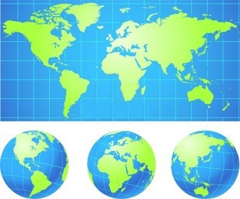
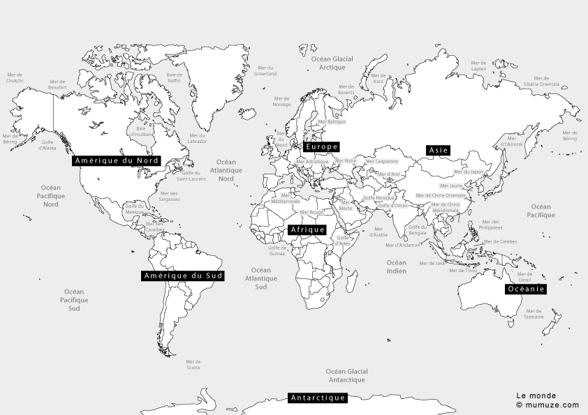
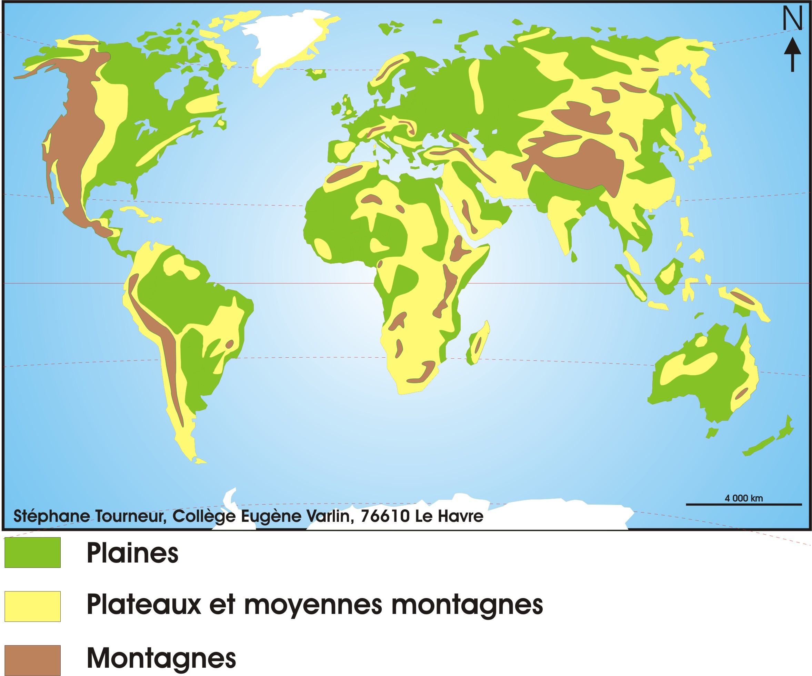
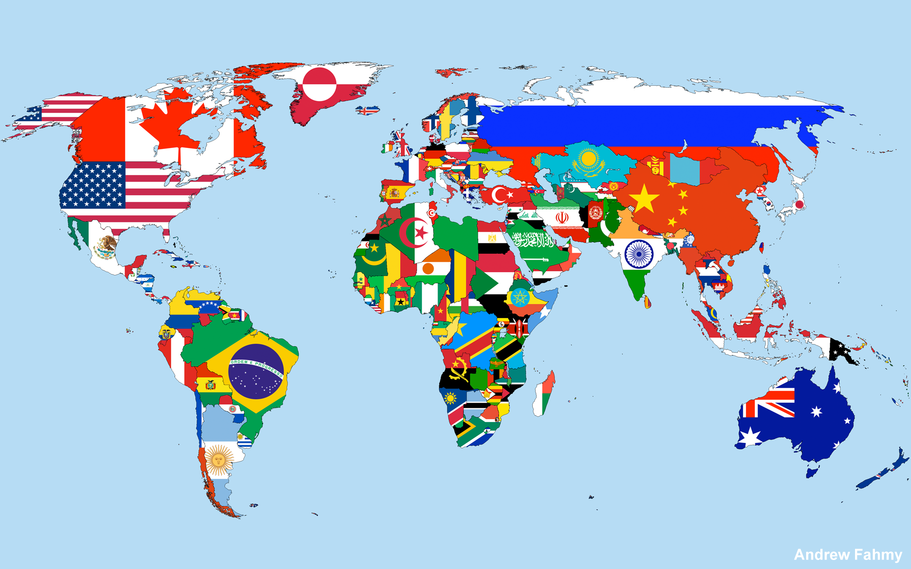

MACLASSE.COM

En règle général, le sens 1er du mot "monde" désigne notre planète, avec ses habitants et son environnement. Le monde fût représenté de plusieurs façon à travers le temps avant de devenir la carte que nous connaissons tous. C'est la 3ème planète la plus proche du soleil et la 5ème plus grande du système solaire.

Le monde est partagée entre plusieurs pays sur différents continents. Certains pays sont très petits et d'autres sont immenses. On parle de grande puissance car ils ont une superficie importante, une grande population, une économie forte, une puissance militaire imposante et possède plusieurs savants.
 Nous pouvons également voir les différents reliefs dans le monde, ainsi que les plus hauts sommets que nous pouvons trouver. Nous savons que la Terre est essentiellement composé d'eau. Ainsi le relief change suivant le lieu, de plus celui-ci évolue au fur et à mesure du temps avec le mouvement des plaques tectoniques.

En 2015, nous comptions 7,3 milliars d'habitants, une projection estime qu'en 2050 nous serions 9,7 milliards d'habitants. De façons officielle, nous pouvons repertorier 197 pays dans le monde.

Mentions légales / Qui sommes-nous ? / Plan du site
Nos matières : français - mathématiques - histoire - sciences - arts visuels - geographie